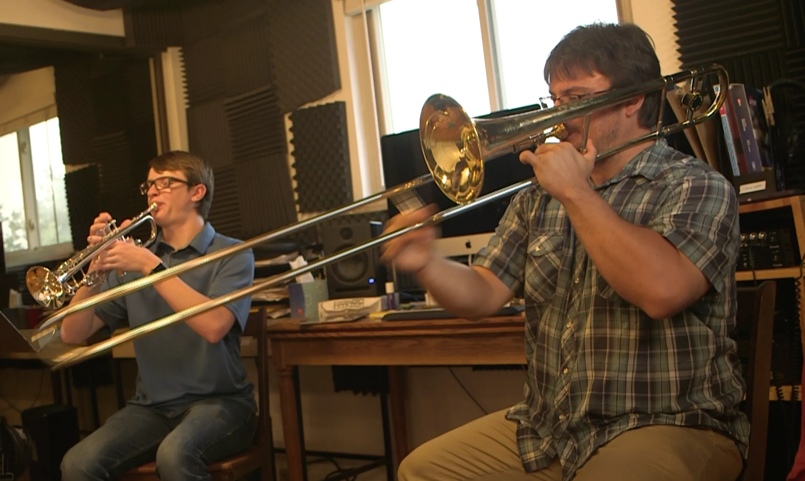
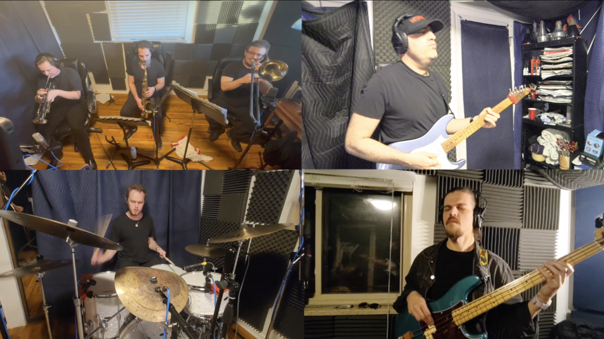
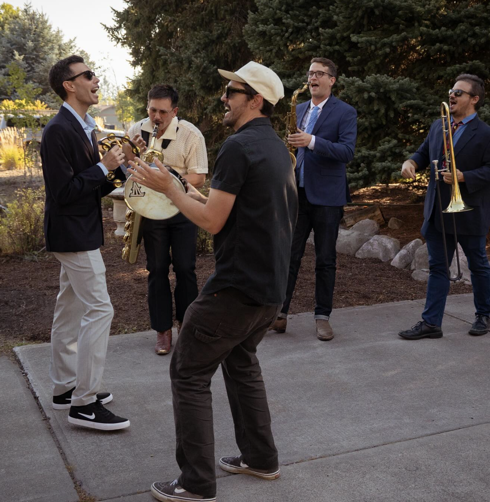

Hello! I'm Jon Gauer (friends call me "Gauer," rhymes with "shower"), and I'm a professional musician in metro Denver. I began my career as a trombonist and lesson instructor after graduating from the University of North Texas in 2015, and have since branched out to additional work as a composer/arranger, vocalist, and audio engineer.
On this website you'll find information about my experience - resume and work samples - as well as the services I offer. Feel free to email me (jongauer@gmail.com) with any inquiries or other questions.
View My ResumeServices Offered
Performance
Need a trombonist for your band or project? I have over a decade of professional performing & recording experience on both tenor trombone and bass trombone and enjoy playing in all styles.
I've also recently begun offering services as a vocalist, specializing in rock/jazz/pop styles.
Check out my demo if you'd like to hear what I have to offer, and send me an email if you need someone for your next gig!
Music Lessons

Want to get better at your instrument (or voice)? Lessons are a great way to get professional guidance and accelerate your learning process. I take pride in my work as a teacher and have a track record of numerous successful and musically fulfilled students over the past 10+ years.
In-person lessons available in Arvada, Littleton, or Conifer; online lessons available for students anywhere.
Inquire About Lessons"Gauer is an incredible musician and I can vouch for his professionalism, rapport-building with students, and teaching skills." - Alex Randolph, band director, Arvada, CO"He's a good teacher, a great guy, he's not too serious, he'll throw a few jokes into your lessons, and he makes the lesson days fun." -Thomas, former student
Audio Engineering

Want to record your next project at a high level of polish with a minimum of stress? Horn Star Studios may be just what you're looking for!
I specialize in recording and mixing music that sounds "real" and as close to the human performance as possible - perfect if you play jazz, classical, funk, blues, brass bands, jam bands, or other minimally-produced styles of music, and especially if you want to work with someone who knows how to get good results recording horns.
My setup includes sound-treated rooms, professional-quality equipment, and a philosophy of "I'm your audio engineer, not your producer" - I aim to bring your artistic vision to life without bossing you around or overriding your creative judgment.
Inquire about recordingPrivate Event Bookings

Looking to add music to your private event? No problem! I can organize a band for any style of music you're looking for, from cocktail lounge jazz to any era of Top 40 rock/pop hits - perfect for weddings, parties, corporate events, fundraisers, and more.
Inquire about private bookings